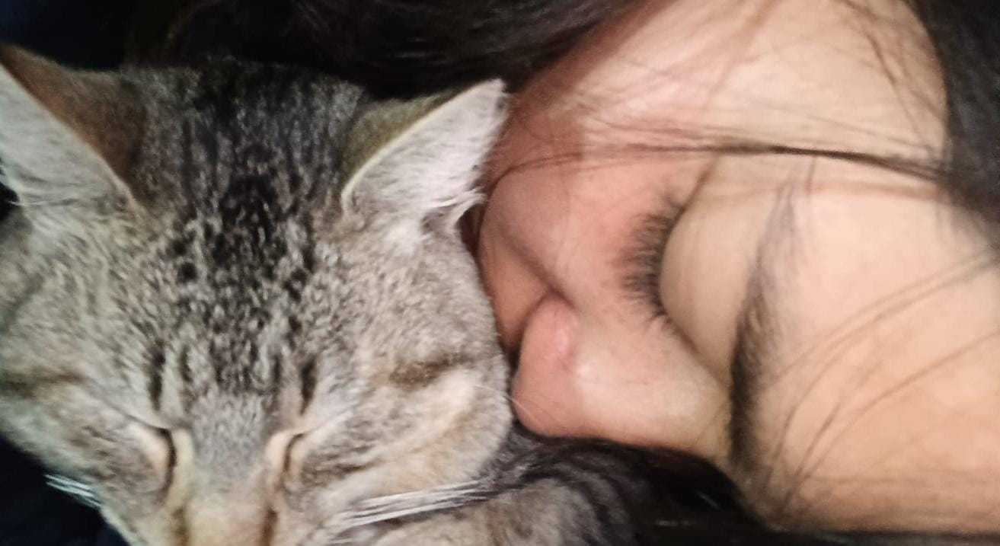

Mi Girasol 🌻
Querida señorita Imelda, dicen que los girasoles buscan la luz del sol, que giran para encararlo y absorber su energía. Para mí tu eres esa flor que busca brillar y llegar más alto cada día, aquella que muestra su luz con esa sonrisa tan suya :).
Cada pequeño momento aunque sea minimo es increible si estas tu, con ese carisma y esa mirada de uuuuh asi bien malota jajaja pero a la que tambien muestra un mundo increible y bueno, tqm .
Quiero que este pequeño detalle te recuerde lo increíblemente especial que eres. Que, al igual que este ramo de girasoles, tu esencia es fuerte, radiante y capaz de traer alegría a todo lo que te rodea. Gracias por ser tú, por tu paciencia,por tu presencia y por cada instante compartido.
